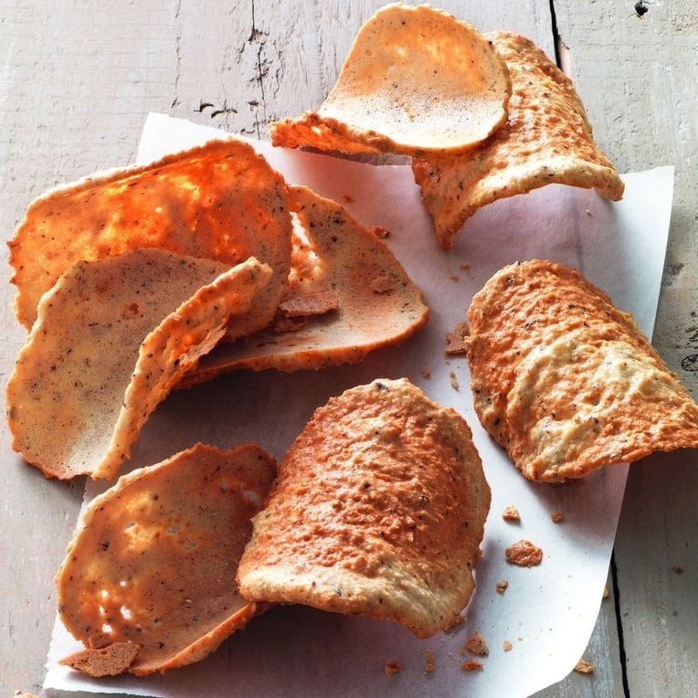
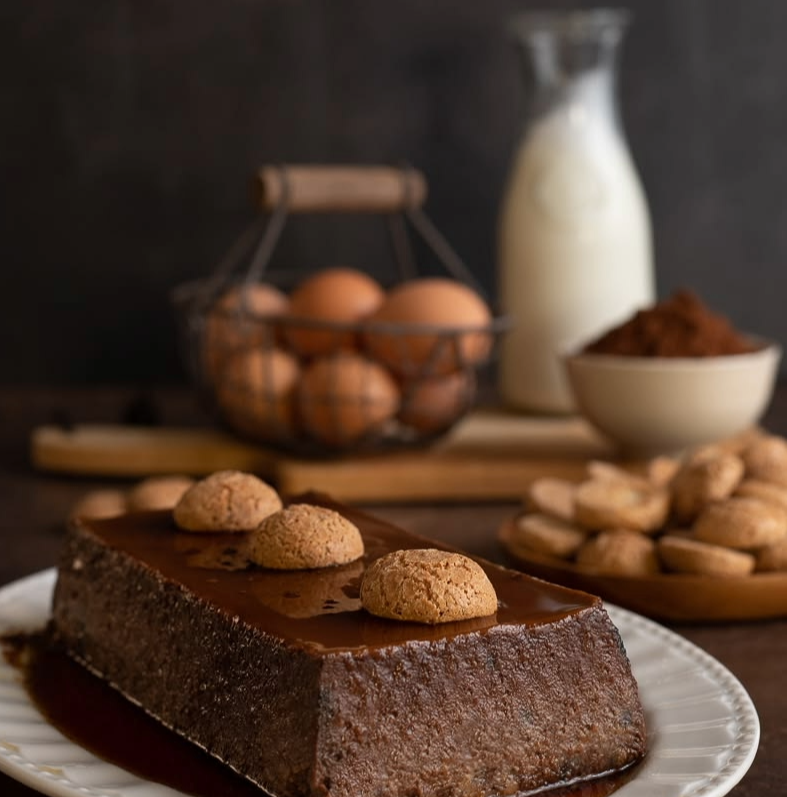

Ricette Dolci
In questa sezione troverai tutte le ricette dolci tipiche delle regioni italiane, adatte ad ogni occasione.

Valle d'Aosta -Le Tegole-
Ingredienti:
-Zucchero 200 g
-Mandorle 80 g
-Nocciole 80 g
-Farina 00 60 g
-Burro 60 g
-Albumi 4
-Baccello di vaniglia 1
Preparazione:
Per preparare le tegole dolci, iniziate tostando le mandorle e le nocciole: rivestite una leccarda con carta da forno e dsponeteci sopra le mandorle e le nocciole. Cuocete in forno statico preriscaldato a 150° per 30 minuti o a 130° per 25 minuti se usate il forno ventilato. Trascorso questo tempo, lasciate intiepidire il tutto e poi spellate le mandorle e le nocciole con le mani, dopodichè trasferitele in un mixer assieme a metà della dose totale di zucchero. Azionate per qualche secondo, fino a ridurre il tutto in briciole.
Trasferite la farina di noci e mandorle in una ciotola capiente e aggiungete il burro che avete fatto sciogliere in precedenza, mescolate fino a compattare, aiutandovi con una spatola. Aggiungete i semini della vaniglia, versate la farina in un colino e setacciatele direttamente nella ciotola contenente il composto, mescolate bene e mettete da parte.
Ora ponete gli albumi in una ciotola e montateli con uno sbattitore elettrico. Non appena inizieranno a montarsi, aggiungete l'altra metà dose di zucchero e continuate, fino a che non otterrete un composto gonfio e spumoso. Quindi unite gli albumi montati al composto.
Mescolate con una spatola per amalgamare e ottenere un composto omogeneo. Rivestite nuovamente una leccarda con carta da forno e ponete con un cucchiaio piccole quantità di impasto di circa 10 g a 3-4 cm di dstanza le une dalle altre. Schiacciate ogni goccia di impasto con il dorso di un cucchiaio, formando dei cerchi del diametro di circa 7 cm e sottili 1/2 millimetro. Per facilitarvi nell'operazione, bagnate il dorso del cucchiaio, in modo che l'impasto non aderisca troppo alla superficie. Completata quest'operazione, cuocete in forno statico preriscaldato a 180° per 8 minuti o a 160° per 3-4 minuti se usate il forno ventilato. Quando risulteranno leggermente croccanti e brunite, sfornatele e adagiatele su un mattarello, in questo modo si seccheranno e acquisiranno la loro tipica forma incurvata. Non vi resta che servire le vostre tegole dolci accompagnandole con un ottimo vino bianco secco!
Per preparare le tegole dolci, iniziate tostando le mandorle e le nocciole: rivestite una leccarda con carta da forno e dsponeteci sopra le mandorle e le nocciole. Cuocete in forno statico preriscaldato a 150° per 30 minuti o a 130° per 25 minuti se usate il forno ventilato. Trascorso questo tempo, lasciate intiepidire il tutto e poi spellate le mandorle e le nocciole con le mani, dopodichè trasferitele in un mixer assieme a metà della dose totale di zucchero. Azionate per qualche secondo, fino a ridurre il tutto in briciole.
Trasferite la farina di noci e mandorle in una ciotola capiente e aggiungete il burro che avete fatto sciogliere in precedenza, mescolate fino a compattare, aiutandovi con una spatola. Aggiungete i semini della vaniglia, versate la farina in un colino e setacciatele direttamente nella ciotola contenente il composto, mescolate bene e mettete da parte.
Ora ponete gli albumi in una ciotola e montateli con uno sbattitore elettrico. Non appena inizieranno a montarsi, aggiungete l'altra metà dose di zucchero e continuate, fino a che non otterrete un composto gonfio e spumoso. Quindi unite gli albumi montati al composto.
Mescolate con una spatola per amalgamare e ottenere un composto omogeneo. Rivestite nuovamente una leccarda con carta da forno e ponete con un cucchiaio piccole quantità di impasto di circa 10 g a 3-4 cm di dstanza le une dalle altre. Schiacciate ogni goccia di impasto con il dorso di un cucchiaio, formando dei cerchi del diametro di circa 7 cm e sottili 1/2 millimetro. Per facilitarvi nell'operazione, bagnate il dorso del cucchiaio, in modo che l'impasto non aderisca troppo alla superficie. Completata quest'operazione, cuocete in forno statico preriscaldato a 180° per 8 minuti o a 160° per 3-4 minuti se usate il forno ventilato. Quando risulteranno leggermente croccanti e brunite, sfornatele e adagiatele su un mattarello, in questo modo si seccheranno e acquisiranno la loro tipica forma incurvata. Non vi resta che servire le vostre tegole dolci accompagnandole con un ottimo vino bianco secco!

Piemonte -Il Bonet-
Ingredienti:
-Amaretti 200 g
-Cacao amaro in polvere 35 g
-Tuorli (medio) 1
-Latte intero 500g
-Zucchero 150 g
-Uova (medie) 4
-Sale fino 1 pizzico
-Amaretto (liquore) 2 cucchiai
Per il caramello:
-Zucchero 150g
-Acqua 50 g
Per decorare:
-Amaretti per decorare q.b.
Preparazione:
Per preparare il bonet inziate dal caramello: in un pentolino versate 50 g di acqua, poi 150 g di zucchero, scaldate sul fuoco senza mescolare, finchè il composto non diventerà ambrato.
Una volta pronto, versate il caramello in uno stampo da plumcake da 22x8 cm e tenetelo da parte. In una ciotola versate le uova, il tuorlo e lo zucchero, mescolate con la frusta.
Setacciate il cacao, aggiungete un pizzico di sale, sbriciolate poi gli amaretti. Aromatizzate con il liquore, quindi versate il latte, mescolando, a più riprese. L'impasto è pronto.
Versate tutto nello stampo. Cuocete a bagnomaria in questo modo: prendete una pirofila ampia che possa contenere lo stampo del bonet, quindi riempitela di acqua bollente tanto da arrivare a 2-3 cm dalla base dello stampo. Ponete in forno e portate alla temperatura di 150°, modalità statica. Una volta a temperatura, aprite il forno e inserite lo stampo del bonet nella pirofila. Quindi cuocete per 50-60 minuti circa. Una volta pronto, aprite il forno e verificate la cottura. Se smuovendo lo stampo il composto risulta muoversi troppo prolungate la cottura ancora di 10 minuti. Appena pronto sfornate il tutto e con attenzione togliete lo stampo dalla pirofila.
Lasciate raffreddare completamente a temperatura ambiente. Una volta freddo, per sformare il bonet più facilmente, scaldate appena appena solo la base (con un cannello, un accendino o anche sul gas se non si hanno alternative), attenzione a non avvicinare la fiamma e si tratta di pochissimi istanti: rovesciatelo su un tagliere o piatto da portata. Decorate con gli amaretti interi e servite subito il vostro bonet fatto in casa